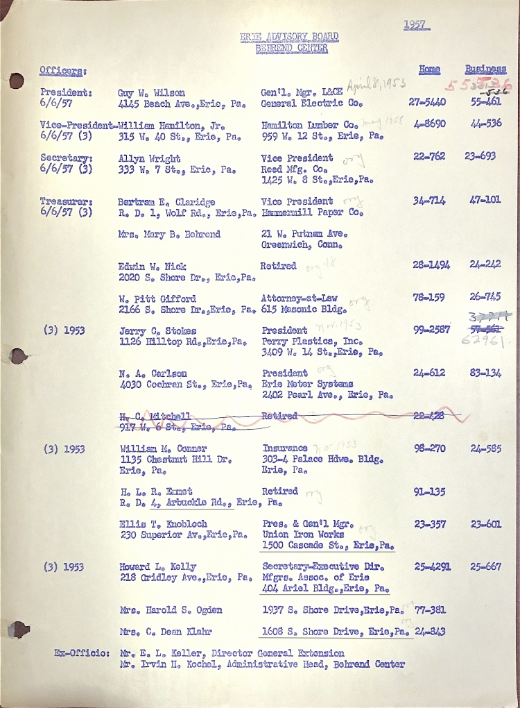

Erie Advisory Board Behrend Center Unknown Author List of persons A list of all active and retired Behrend Center Advisory Board members as of an unspecified date in 1957. Contains contact information for all active members. The stongs of numbers tied to each member appear to be phone numbers, though they do not line up with the current pattern for phone numbers. 1957 Erie Advisory Board Behrend Center Officers: Home Business President: Guy W. Wilson Gen*l. Mgr. L&CE April 8, 1953 553536 536 6/6/57 4145 Beach Ave., Erie, Pa. General Electric Co. 27-5440 55-461 Vice-President-William hamilton, Jr. Hamilton Lumber Co. May 1955 4-8690 44-536 6/6/57 (3) 315 W. 40 St., Erie, Pa. 959 W. 12 St., Erie, Pa. Secretary: Allyn Write Vice President org 22-762 23-693 6/6/57 (3) 333 W. 7 St., Erie, Pa. Reed Mfg. Co. 1425 W. St., Erie, Pa. Treasurer: Bertram E. Claridge. Vice President org 34-714 47-101 6/6/57 (3) R. D. 1, Wolf Rd., Erie, Pa. Hammermill Paper Co. Mrs. Mary B. Behrend 21 W. Putnam Ave. Greenwich, Conn. Edwin W. Nick Retured org 48 28-1494 24-242 2020 S. Shore Dr., Erie, Pa. W. Pitt Gifford Attorney-at-Law org 78-159 26-745 2166 S. Shore Dr., Erie, Pa. 615 Masonic Bldg. 37714 (3) 1953 Jerry C. Stokes President nov. 1953 99-2587 57-561 1126 Hilltop Rd., Erie, Pa. Perry Plastics, Inc. 62961 3409 W. 14 St., Erie, Pa. N. A. Carlson President org 24-612 83-134 4030 Coohran St., Erie, Pa. Erie Motor Systems 2420 Pearl Ave., Erie, Pa. H. C. Mitchall Retired 22-428 917 W. 6 St., Erie, Pa. (3) 1953 William M. Conner Insurance Nov 1953 98-270 24-585 1135 Chestnut Hill. Dr., Erie, Pa. 303-4 Palanco Hdwe. Bldg. Erie, Pa. H/L/R Emmet Retired org 91-135 R.D. 4, Arbuckle Rd., Erie, Pa. Ellis T. Knobloch Pres. & Gen*l Mgr. org 23-357 23-601 230 Superior Av., Erie, Pa. Union Iron Works 1500 Cascade St., Erie, Pa. (3) 1953 Howard L. Kelly Secretary_Executive Dir. 25-4291 25-667 218 Gridley Ave., Erie, Pa. Mfgrs. Assoc. of Erie 404 Ariel Bldg., Erie, Pa. Mrs. Harold S. Ogden 1937 S. Shore Drive,Erie,Pa. 77-381 Mrs. C. Dean Klahr 1608 S. Shore Drive, Erie,Pa. 24-843 Ex-Officier: Mr. E. L. Keller, Director General Extension Mr. Irvin H. Kochel, Administrative Head, Behrend Center
